|
Demo_Aquifer: the ground water diffusion in an aquiferPierre Bommel, Bruno Bonté, Marie-Paule Bonnet, Grégoire Leclerc.The aim of this model (zipfile, 191Ko) is to simulate water exchange between surface soil, river network and the underlying aquifer. This model is a replication of the model by (Ravazzani et al. 2011) called MACCA-GW (for MACroscopic Cellular Automata for GroundWater). It represents the water flow in unconfined aquifers. The model is based on a uniform regular lattice, that discretizes the water flow in space and time. Many complex macroscopic fluid dynamical phenomena seem difficult to be modelled by cellular automata, because they take place on a large space scale and require a macroscopic level of description. 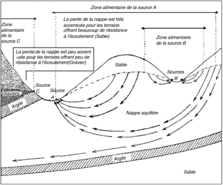 Groundwater flow systems; picture presented at the Brussels World Exhibition in 1910 by René d’Andrimont (from Jacobus J. de Vries in Delleur 1998). The Demo_Aquifer model focuses only on unconfined aquifer: case b of the following figure:
Kinds of aquifers. (a) Confined aquifer; (b) unconfined aquifer. (from Delleur 1998). The Demo_aquifer model refers only on the unconfined aquifer (b). The physical model based on the Darcy's law (1856)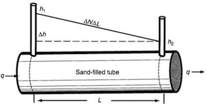 Figure illustrating tube experiments of Henri Darcy (from Delleur 1998). The Darcy equation is:
where :
(a) 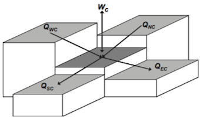 (b)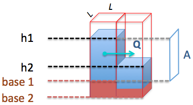 (a) Scheme for the calculation of water fluxes between a central cell and its four adjacent cells. Qnc is the latteral flux coming from the northern cell, for example. Wc is the vertical flux representing source or sink (from Ravazzani et al. 2011). (b) flow between 2 cells. Then the total incoming or outgoing flow is: QC = QNC + QEC + QSC + QWC + WC in [L3 T-1], where
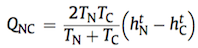 (eq. 2)where:
In Demo_Aquifer, the Transmitivity of a cell C is calculated as: TC = KC . ZC where . ZC is the thickness = (head - base) of the cell. The term 2TNTC /(TN + TC) is the harmonic mean of transmissivity. It has been chosen because of its property to remove the impacts of large outliers by limiting the flux to the lower value of transmissivity. The Reynolds number for determining the time step valueDarcy's law is only valid for slow, viscous flow as it is the case of most groundwater flows. Typically any flow with a Reynolds number less than 1 is clearly laminar, and it would be valid to apply Darcy's law. Experimental tests have shown that flow regimes with Reynolds numbers up to 10 may still be Darcian, as in the case of groundwater flow. The Reynolds number D (a dimensionless parameter) for porous media flow is defined as the ratio of physical and numerical diffusivities: (eq. 3)
(eq. 3)where :
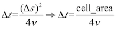 (eq. 4)So, in order to have smooth water movements, the model must first determine the duration of delta t, the minimum time step. After calculating the diffusion flows between the cells, the hydraulic head of each cell is updated for the subsequent time step (t + Δt), applying the discrete mass balance equation: 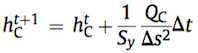 (eq. 5)where:
Model description and resultsThe first version of the model (Demo_Aquifer.pcl) is a simple
cellular automata (with one class: Plot). The main attributes of
Plot are: storativity, head, base, conductivity and sideLength,
then altitude base volume hasConstantHead dailyFluxWithSurface. rep := 24 * 3600 / Demo_Aquifer deltaT. Here, the transition function of the CA is called #setAllVolumetricFluxes. Instead of
having 'state' and 'bufferState', the cells use head (as 'state') and
volume (as the bufferState). lateralWaterDiffusionThis way of doing is similar for the other flows. Then the #calculateHead method is called for each cell in order to set the new head of the cells, according to eq. 5. (#calculateHead is equivalent to the #updateState method for standard CA) The following class diagram shows the classes of the model in its final version (Demo_Aquifer_5_rain.pcl): 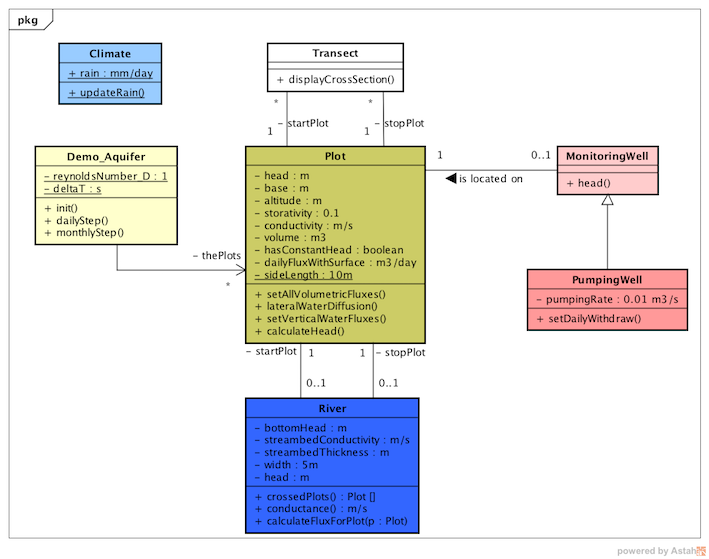 Version 1: "Demo_Aquifer.pcl"This is the simplest version. It contains only one class: Plot. It is a 10x10 grid. A quantity of 1400 m3/day is removed from cell #2 and put to cell 99#: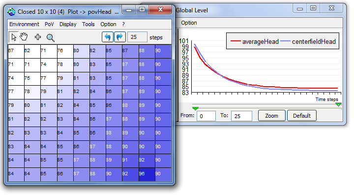 Version 2: "Demo_Aquifer_2_transect.pcl"In this version, 2 classes have been added to display a vertical cross-section of the grid: Transect and CrossSectionChart. From the same initialisation of version 1, a transect is added from cell #11 to cell #100 and the cross-scetion is automatically displayed. The user can also add manually as many transects as he wants. 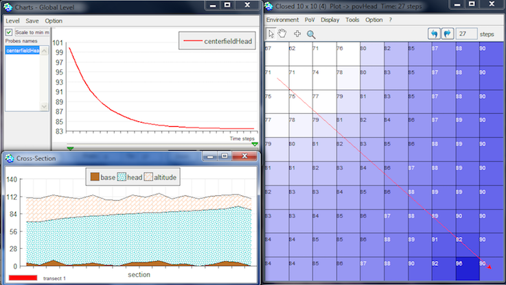 Version 3: "Demo_Aquifer_3_riverWells.pcl"This version adds 3 classes: MonitoringWell (to monitor the local hydraulic head), PumpingWell (to pump water) and River. According to its head, the river may recharge or discharge the aquifers it crosses:
Version 4: "Demo_Aquifer_4_autoCheck.pcl"A specific focus of the model development is the assessment of stability and convergence. A correct choice of computational time step Δt guarantees both stability and accuracy. In order to avoid chessboard effects, the Reynolds number is adjusted so as to reduce the amplitude of the oscillations of a given cell. 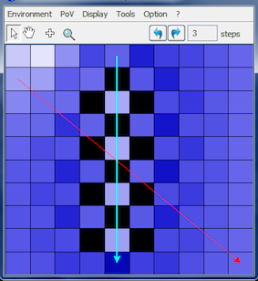 Example of auto-modification of D: ' D = 1 => deltaT = 2000 s - Daily repetition = 43 per day.' Version 5: "Demo_Aquifer_5_rain.pcl"Recharge of an aquifer usually refers to precipitation entering from the ground to the water table. The Climate is updated and each cell rechargeByRain its aquifer, only once a day. 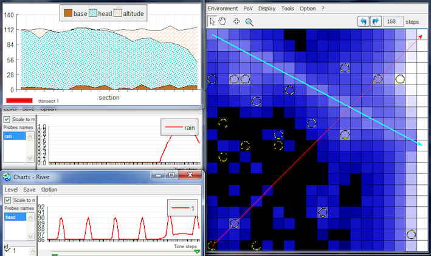 Version 6: "Demo_Aquifer_Ravazzani"The version 6 aims at verifying the tests described in the paper by Ravazzani et al. (2011). See all the tests here. The developed code is simple enough to facilitate its integration into other models such as land-surface models with agents. For more information, see Ravazzani, G., Rametta, D., & Mancini, M., 2011. Macroscopic cellular automata for groundwater modelling: A first approach. Environmental Modelling & Software, 26(5), 634-643. See paper on line Jean Margat, Thierry Ruf, 2014. Les eaux souterraines sont-elles
éternelles ? 90 clés pour comprendre les eaux souterraines.
Editions Quæ, MODFLOW 6: Harbauch A W, 2005. Modflow-2005, The U.S. Geological Survey Modular Ground-Water Model, U.S. Geological Survey Techniques and Methods 6-A16 http://water.usgs.gov/nrp/gwsoftware/modflow2005/modflow2005.html Jacques W. Delleur, 1998. Handbook of
Groundwater Engineering. Springer Science & Business Media,
1998 - 949 p, ISBN 3540647457, 9783540647454
|
|
||||